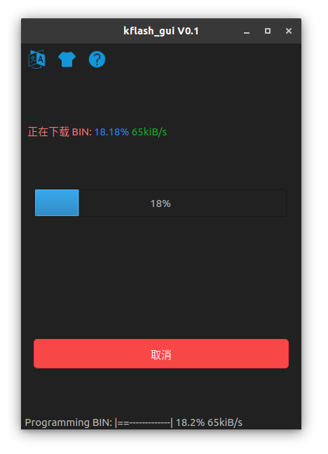

更新 MaixPy 固件
1. 连接硬件
连接 Type C 线， 一端到开发板， 一端到电脑
2. 确认驱动已经正确安装
按照前面的说明安装好驱动，并且在电脑中能看到串口设备， Linux 和 Mac OS 执行 ls /dev/ 即可看到设备号，比如名字是ttyUSB0和ttyUSB1; Windows在设备管理器中查看
3. 获得升级工具
下载 kflash_gui, 会得到一个压缩包
kflash_gui 是跨平台的，可以在多个系统下工作（包括 Windows、Linux、MacOS、甚至树莓派) 使用勘智（Kendryte）的
Windows版本可能部分开发版无法下载成功，请使用kflash_gui这个软件来下载解压到一个文件夹，双击
kflash_gui.exe(/kflsh_gui) 即可运行，Windows下建议右键固定到开始页面或者固定到任务栏，Linux下可以自己新建一个kflash_gui.desktop， 修改文件地址， 使用管理员身份复制到/usr/share/application目录，然后在系统菜单界面就可以看到kflash_gui这款应用了另外也可以使用命令行版本下载
pip3 install kflash kflash --help kflash -p /dev/ttyUSB0 -b 1500000 -B goE maixpy.bin
4. 获得固件
固件为 .bin 结尾或者 .kfpkg 的文件
.kfpkg其实就是多个.bin文件的打包版本, 可以使用kflash_gui打包或者手动打包
固件命名说明：
maixpy_v*.bin： 默认版本的MaixPy固件，包含了大多数功能maixpy_v*_with_lvgl.bin： MaixPy固件, 带LVGL版本.(LVGL是嵌入式GUI框架, 写界面的时候需要用到)maixpy_v0.3.1_minimum.bin： MaixPy固件最小集合，不支持MaixPy IDE， 不包含OpenMV的相关算法和各种外设模块face_model_at_0x300000.kfpkg： 人脸模型，放置在地址位 0x300000， 可以和.bin分开多次下载，不冲突elf.7z： elf 文件，普通用户不用关心，用于死机调试
5. 下载固件到开发板
打开
kflash_gui应用然后选择固件、设置选项， 点击下载即可， 更多特性介绍、使用说明见kflash_gui 项目主页
使用时注意串口不能被其它软件占用，选择正确的开发板和串口号，可以适当降低波特率和使用低速模式来提高下载成功率


对于最早期的
Maix Go， 如果确认选项是对的，仍然无法下载， 可以尝试将三相拨轮按键拨向Down的位置并保持再下载

烧录常见问题FAQ
如果在使用 kflash_gui 烧录出现以下等问题
可以按照以下顺序进行排查
- 检查
PC是否有权限打开端口，对于win10，需要以管理员身份运行kflash_gui。 - 检查端口是否选择正确（如果出现两个设备端口，通常选择端口号小的那一个）。
- 检查端口是否被其他应用占用（如
Maixpy IDE，putty等），应当关闭其他程序占用。 - 检查设备是否选择正确，对于
Maix Bit2.0（包括M1n模块），应该选择Maix Bit ( with Mic )。
补充说明：对于Maix Bit 2.0两个串口端口的问题
- 只有其中一个串口端口有效，用于串口通信与ISP下载程序。
- Maix Bit与PC采用串口通信，通过CH552T芯片实现USB虚拟串口功能，而该芯片可以虚拟出两个串口，在Maix Bit（M1n模块底板）中，我们只用到了一个串口，不过有些k210产品两个串口都使用了。